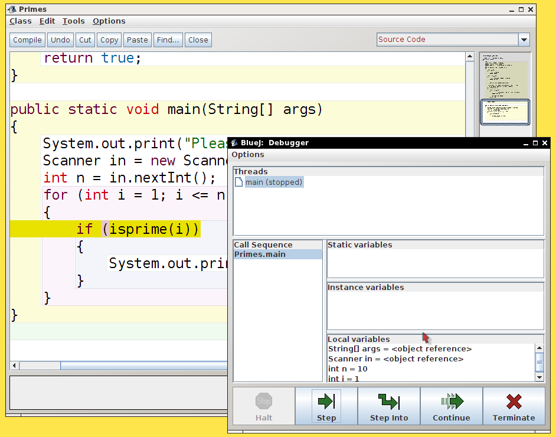

Big Java Late Objects Video
Using a Debugger

Trace program execution
Debugger gains control when
breakpoint
reached
Single-step through program, a line at a time
Step into or over method calls
Inspect variables